PDF · Columns · native Linux reader at 440 × 900 pt · original page pixels, not text reflow
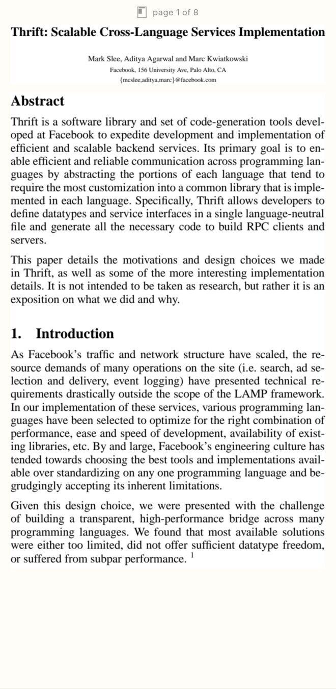
Wider title bands shrink to fit. Columns use their own fitted scale. The 12 × 15 pt outline marks the visible original-page area.
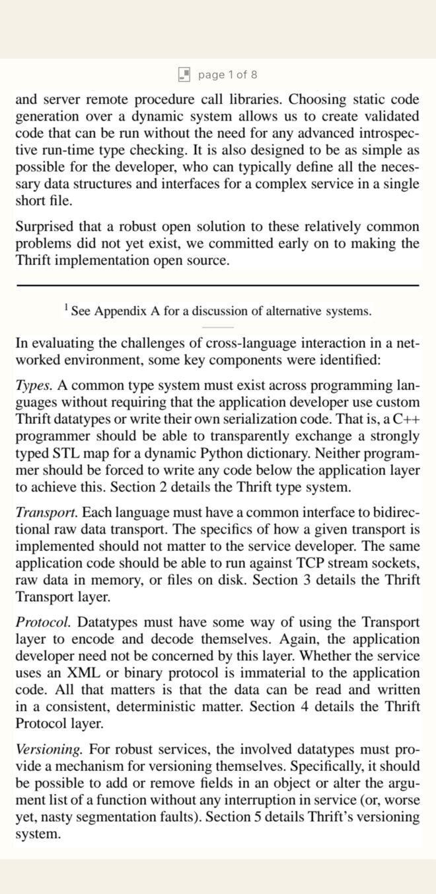
One screen later. Breaks fall between physical lines; a short muted rule marks the column change.
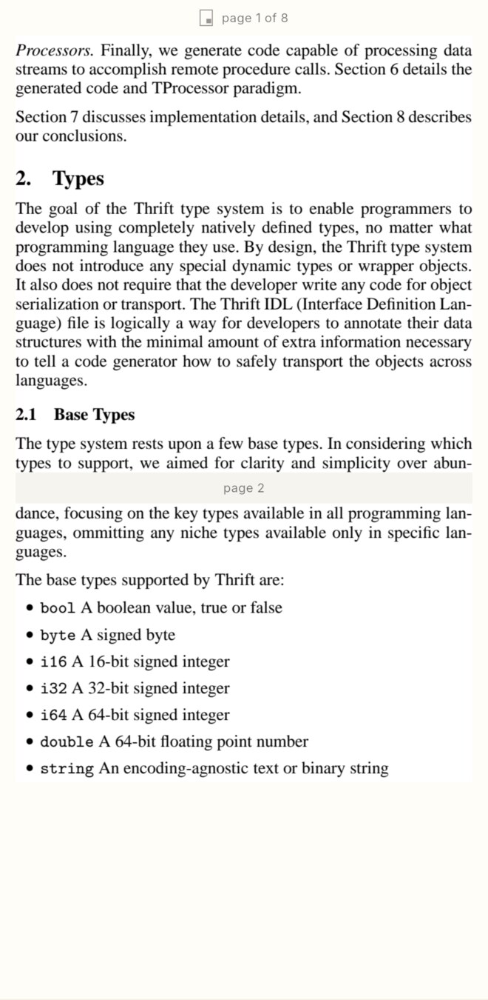
The strip continues across pages. The folio names every visible page as an explicit range, so a page cannot go unnamed between screens.
Captured by integration_test/pdf_columns_test.dart, not a browser imitation of the reader. Quiet outer zones and swipes move one screen; the middle reveals chrome. Page animations slides the strip, never curls it; off or reduced motion changes instantly. Scans and uncertain layouts stay at fit width. Paper: Slee, Agarwal and Kwiatkowski, Thrift: Scalable Cross-Language Services Implementation (2007), Apache Thrift; see source, license and attribution.
Columns · Display progress · native Linux header crops
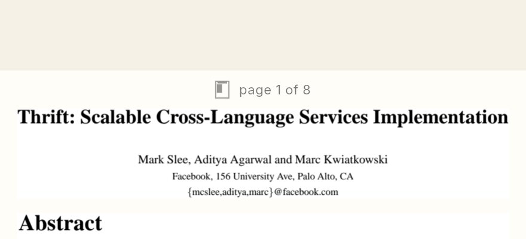
Page: every visible original page (a range when needed), with the top page's visible-area outline.
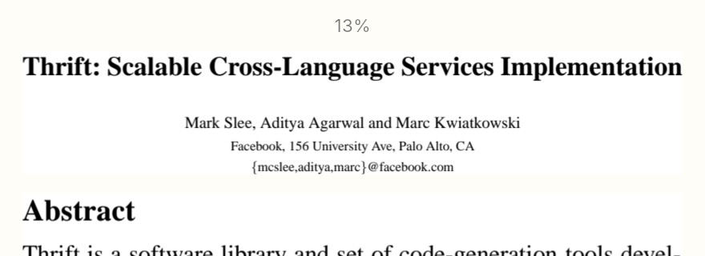
Percent: the existing book-wide percentage, without an outline.
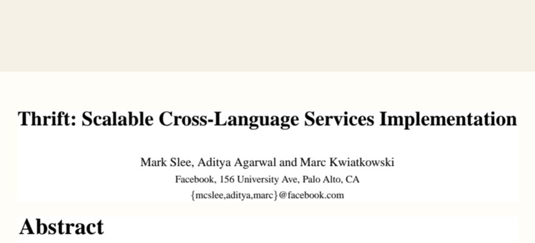
Off: neither folio nor outline. Reserved space stays fixed, so the document does not move.
Native Linux desktop, two excerpts: the 100% Size cap and smaller size, then keyboard screen steps and chrome. Injected safe insets in a narrow desktop window, not an Android device.Native Linux desktop: Progress changes from Page to Percent to Off and back to Page, without moving the PDF crop.
Columns · cutout-safe layout and sharp detail · native Linux with injected safe insets
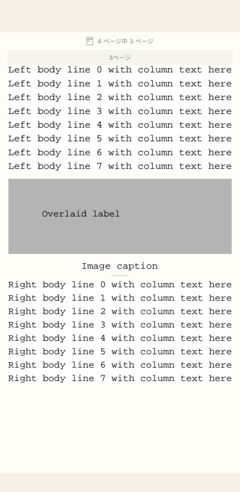
The controller fills the safe content box, not the area behind the cutout or home indicator. Figures and tables fit indivisibly. First-party fixture: a gray raster figure with an overlaid text label.
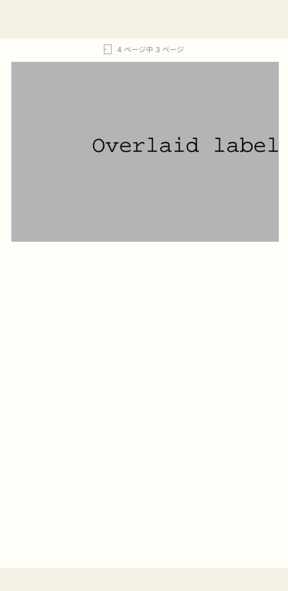
Pinch a figure or a fallback page for new PDF pixels, not a magnified strip bitmap. Pan in both axes; pinch back to the same screen.
Columns · detail admission · native Linux at DPR 3
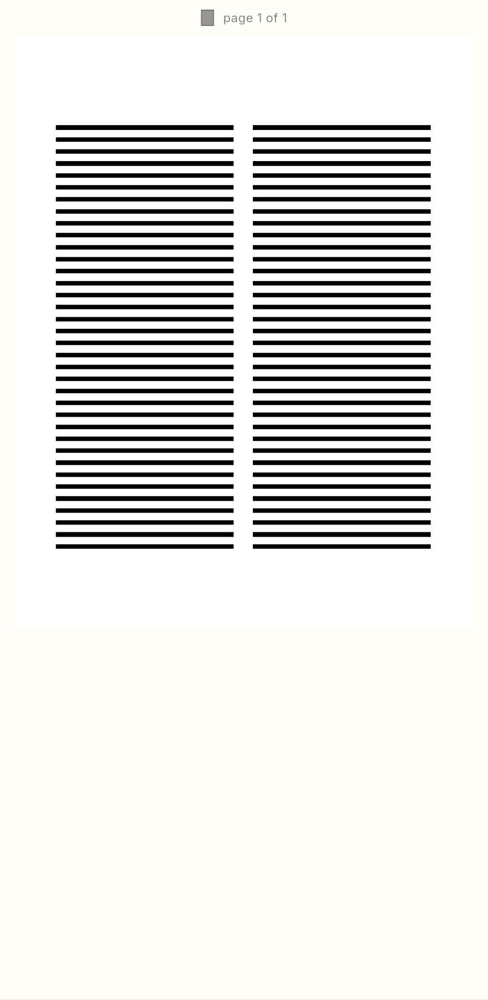
First-party scan control at fit width. Pinching back from detail restores pixel-identical strip content and screen history.A 5× request stops below 40 million pixels, including device density and outward crop rounding. Pan shows newly rendered PDF pixels, never an enlarged strip bitmap.Tall fallback detail stops at the 16,384px edge limit. Extremely tall regions that cannot admit enlargement retain their crisp strip rather than shrink, blur or fail.
PDF · Columns · selection and saved place · stack PR3
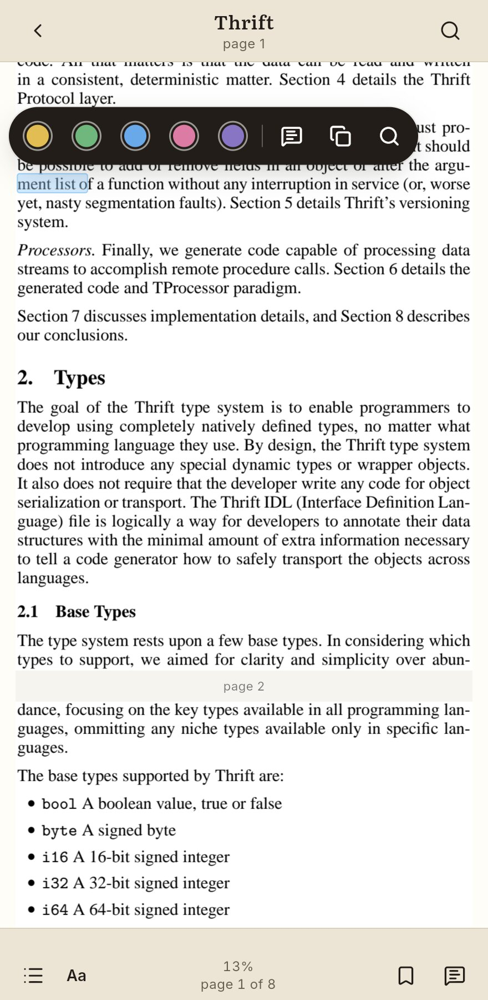
Selection uses the original page's character range through the crop's offset and scale.
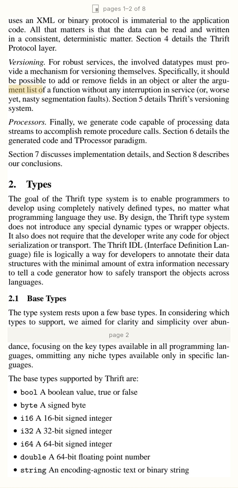
Reopen keeps the original page and height, the right column and its note highlight.
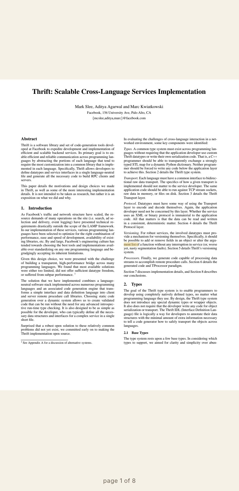
A double tap returns to Fit page. The note remains on its original text; returning to Columns preserves the place.
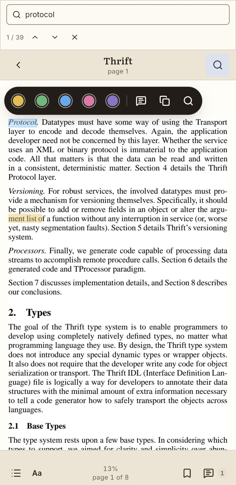
Search and note jumps enter the region containing their canonical page range.
Actual Linux/PDFium captures, not Android or iPhone evidence. Touch double-taps and durable reopen are exercised in the native integration test. The refreshed desktop recording below uses a real moving mouse to select, highlight and change fit, with injected safe insets. Phones with no saved choice detect the first three pages; saved choices always win. macOS goldens are unchanged and any future baseline change requires the Darwin Mac mini.
Native Linux desktop: real pointer selection, highlight and Fit page.
Columns · detail interactions and saved visible place · corrected stack
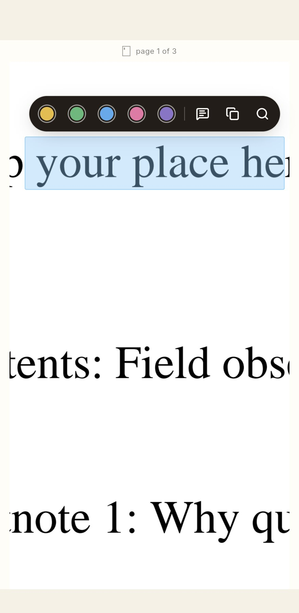
Selection and link areas follow both detail pan offsets. The action capsule uses the settled content transform, including safe insets and the fixed header.
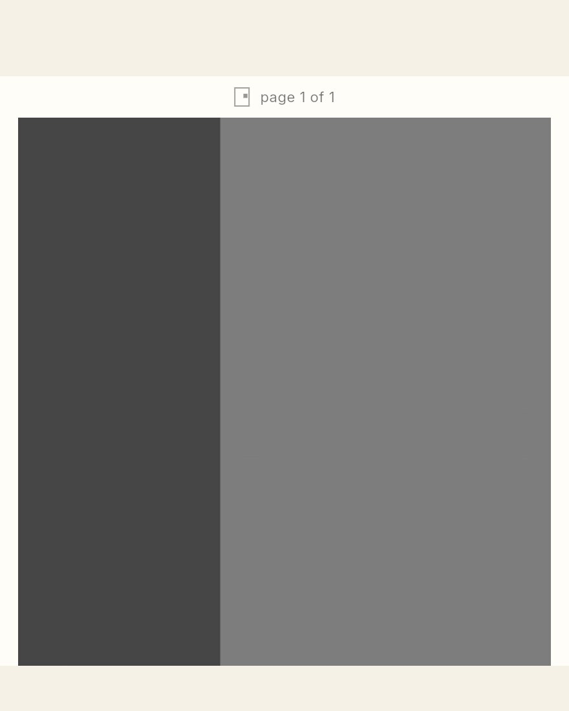
Detail panning updates the saved original-page x+y point, not just the whole figure's top edge.
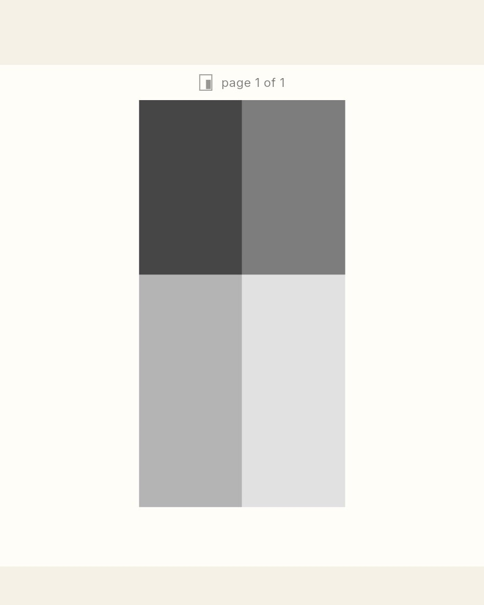
Fresh-core reopen and a fit round-trip retain that visible figure location. Detail zoom itself stays transient; Columns returns at fit.
PDF · textless right-column figure · durable page-space restoration
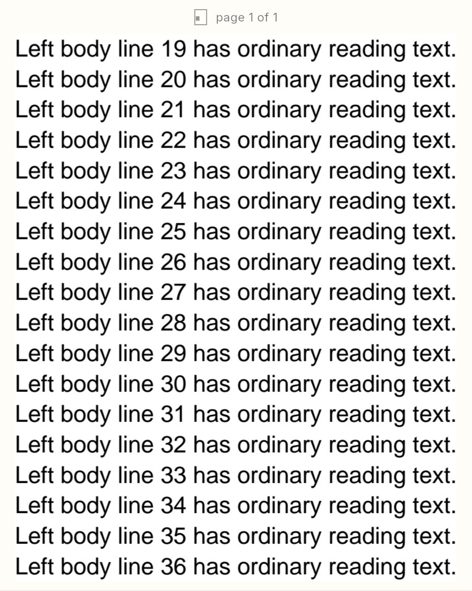
Before: both fit switching and reopening confuse a textless right-column figure with left-column text at the same height (x54 instead of x317).
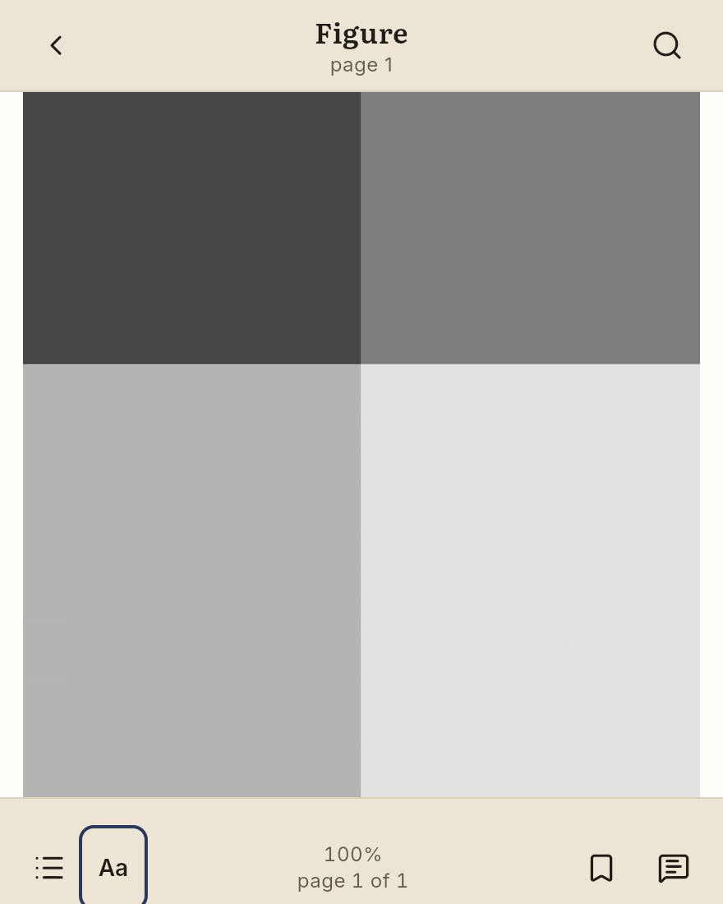
After fit switching: original-page x+y keeps the same figure, without relying on a text offset or a region index.
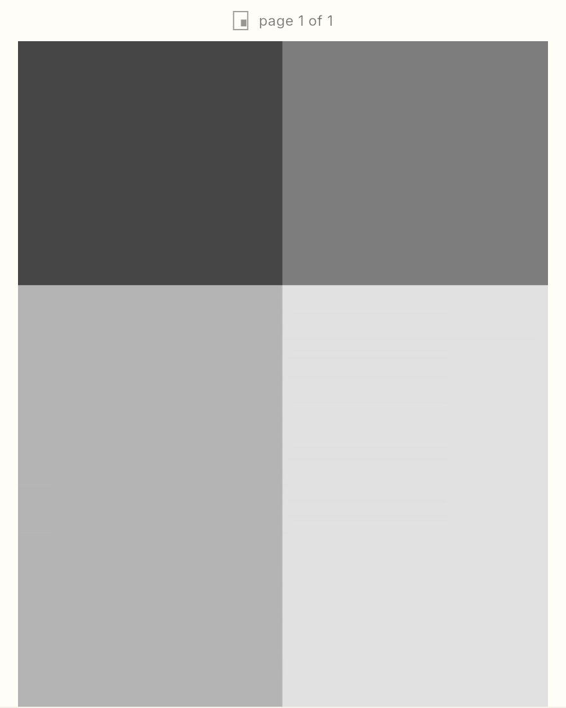
After a fresh core reopen: x317, y350 and no visible text endpoints. Real Linux/PDFium; generated first-party PDF.
Real moving pointer changes Columns → Fit page → Columns while retaining the textless figure's original place.
Two-page spread · EPUB · Paper · left to right
104
Chapter IVNatural Selection
105
Two-page spread · EPUB · Sepia · vertical, right to left, first page on the right